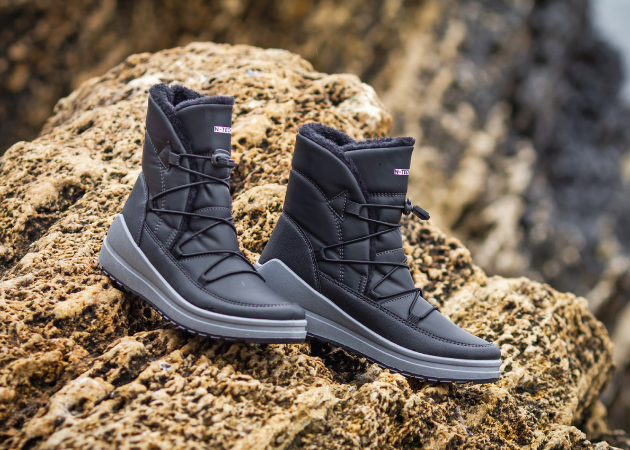

<section class="info__section">
    <div class="container">
        <div class="info__section-wrapper">
            <div class="info__block">
                <div class="info__left">
                    <h3 class="info__block-title">
                        Чому обирають North-Tech?
                    </h3>
                    <p class="info__block-text">
                        Ботинки North-Tech створені для активного життя. Вони підходять для прогулянок містом, подорожей чи походів у гори. Ваші ноги завжди будуть у теплі та безпеці.
                    </p>
                    <div class="info__block-items">
                        <div class="info__item info__item-1">
                            <p class="info__item-number">85</p>
                            <p class="info__item-text">
                                жінок обирають North-Tech за ідеальне поєднання комфорту та стійкості.
                            </p>
                        </div>
                        <div class="info__item info__item-2">
                            <p class="info__item-number">98</p>
                            <p class="info__item-text">
                                клієнтів відзначили, що їхні ноги залишались теплими навіть при -20°C.
                            </p>
                        </div>
                        <div class="info__item info__item-3">
                            <p class="info__item-number">10000</p>
                            <p class="info__item-text">
                                пар ботинок North-Tech були продані за минулий зимовий сезон.
                            </p>
                        </div>
                    </div>
                    
                </div>
                
            </div>
            <div class="video__block">
                <a class="video" data-fancybox href="https://youtu.be/9vyGu2O7xNQ">
                    
                </a>
                <div class="video__info">
                    <h3 class="info__block-title">
                        Подивіться, як North-Tech працюють у реальних умовах!
                    </h3>
                    <p class="info__block-text">
                        Ви ще сумніваєтесь, що це взуття ідеальне для зими?
                    </p>
                    <ul class="video__list">
                        <li class="video__list-item">
                            <span>Водонепроникність:</span> протестовано в дощ і мокрий сніг.
                        </li>
                        <li class="video__list-item">
                            <span>Тепло:</span> комфорт навіть при -20°C.
                        </li>
                        <li class="video__list-item">
                            <span>Стійкість:</span> ідеальний захист від ковзання.
                        </li>
                    </ul>
                    <p class="info__block-text">
                        Перегляньте відео та переконайтеся самі, що ботинки <span>North-Tech</span> готові до будь-яких зимових викликів!
                    </p>
                    <a href="#card" class="order__btn">
                        <span>Виграти знижку</span>
                        <div class="order__btn-icon">
                            
                        </div>
                    </a>
                </div>
            </div>
            <div class="info__block info__block-bottom">
                <h3 class="info__block-title">
                    Отримайте знижку 300 грн!
                </h3>
                <p class="info__block-text">
                    Замовляйте ботинки North-Tech і отримуйте знижку 300 грн на другий товар у вашому замовленні.
                </p>
                <p class="info__block-text">
                    <span>Обирайте більше, платіть менше!</span>
                </p>
            </div>
        </div>
    </div>
</section>